Lotto Dynamics in Integer Space
We find a proper model to represent the dynamics of the system in positive integer space [1 to 69] using random number generator. With this model we run Hybrid Montecarlo(HMC) algorithm to thermalize the system to determine most probable values of quantities like: average absolute difference, root mean square absolute difference and most probable absolute difference, which are helpful to determine the most probable vectors in sample space.
Import some libraries
import random as random import matplotlib.pyplot as plt import numpy as np from numpy import linalg as LA import math as math import pandas
%matplotlib inline
Maximum no in range of lottery
Max = 69
This function generates 5 random samples between 1 to 65.
def sample_generator(Max): x = np.sort(random.sample(range(1,Max), 5) ) return x
1.1. Construction of a Toy Model
For example, considering range of sample equal to 50, among millions of sample one gets:
- mean of first no : 5
- mean of second no :15
- mean of third no :25
- mean of fourth no:35
- mean of fifth no:45
We consider these mean values as equilibrium point of each oscillator. Oscillators oscillate in integer Space. Each sample of lottery is some state of oscillator. There will be total of (50x49x48x47x46/5!) states. We can choose best modle of oscillator by making a study of correlation cofficients among digits in each sample. Here we have proposed 3 model where model I and II are special case of Model III.
1.1.1. Model Selection with Proper Action

Let us define a skewsymmetric distance matrix by taking difference between digits in sample as the matrix elements. There is one distance matrix per sample.
$$D_{ij} = (x_{i}-x_{j})$$
ie.
\( D = \left( \begin{array}{ccc} 0 & \color{blue}{(x_{1}-x_{2})} & (x_{1}-x_{3})& (x_{1}-x_{4}) & (x_{1}-x_{5}) \\ (x_{2}-x_{1}) & 0 & \color{blue}{(x_{2}-x_{3})}& (x_{2}-x_{4}) & (x_{2}-x_{5}) \\ (x_{3}-x_{1}) & (x_{3}-x_{2}) & 0& \color{blue}{(x_{3}-x_{4})} & (x_{3}-x_{5}) \\ (x_{4}-x_{1}) & (x_{4}-x_{2}) & (x_{4}-x_{3})& 0 & \color{blue}{(x_{4}-x_{5})} \\ \color{blue}{(x_{5}-x_{1})} & (x_{5}-x_{2}) & (x_{5}-x_{3})& (x_{5}-x_{4}) & 0 \\ \end{array} \right) \)
Taking (N = 5) oscillators with flexibility between seperation of numbers as spring constant (K=1). Simple model of Action can be defined by taking single updiagonal terms only as:
Model-I (Linear)
$$ L = \frac{1}{2}K[(x_1 -x_2)^2 +(x_2 -x_3)^2 + (x_3 -x_4)^2 + (x_4 -x_5)^2 ] $$
Model-II (Linear &Periodic)
$$ L = \frac{1}{2}K[(x_1 -x_2)^2 +(x_2 -x_3)^2 + (x_3 -x_4)^2 + (x_4 -x_5)^2 + (x_5 -x_1)^2 ] $$
Considering effect of all terms in distance matrix one can define new model of Action as:
Model - III (Quadratic & Periodic)
$$L = Tr(D^{\dagger}KD)$$
$$\color{red}{Warning:}$$ Since each digit are not equally correlated to eachother, this form of action should be corrected by choosing appropriate spring constant for crossed terms like $x_{3}x_{4}$. K is another matrix(or tensor) of spring constants which can be determined by finding correlation cofficients between digits within several samples.
1.1.2. Study of Distance Matrix
We can make skew symmetric matrix into traceless symmetric matrix by taking absolute value of each elements.
def distance_matrix(x): D = [[0.0 for k in range(5)]for l in range(5)] for k in range(5): for l in range(5): D[k][l] = abs(x[k]-x[l]) return D
Lets have a look of distance matrix:
distance_matrix(sample_generator(Max))
[[0, 9, 24, 39, 44], [9, 0, 15, 30, 35], [24, 15, 0, 15, 20], [39, 30, 15, 0, 5], [44, 35, 20, 5, 0]]
We can generate a small bucket of 9 distance matices to visualize distribution of distances.
M = [np.array([[0,0,0,0,0],[0,0,0,0,0],[0,0,0,0,0],[0,0,0,0,0],[0,0,0,0,0]]) for k in range(9)] for k in range(9): M[k] = np.array(distance_matrix(x = sample_generator(Max)))
for k in range(9): plt.subplot(3,3,k+1) plt.imshow(M[0], interpolation='nearest', cmap=plt.cm.ocean, extent=(0.5,10.5,0.5,10.5)) plt.colorbar() plt.show()
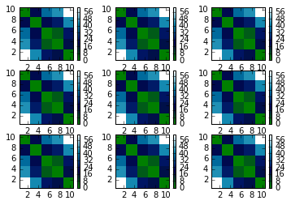
1.1.2.1 Enasmble of Distance matrices
wstor_III = [] for k in range(10000): x = sample_generator(Max) A = distance_matrix(x) w, v = LA.eig(A) #print max(w) #for l in range(5): #wstor.append(abs(w[l])) wstor_III.append(max(w)) plt.scatter(k,max(w))
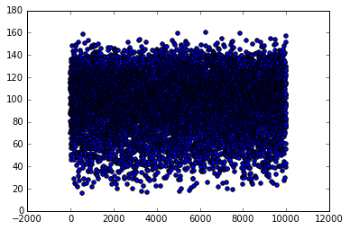
Principle component of eigen values helps us to predict better model by dominancy of principle direction.
Principle Component Analysis - Model -III
num_bins = 100 plt.grid() plt.title("Plot of feequency of principle component in eigen values") plt.hist(wstor_III,num_bins, normed= 1.0, facecolor='green', alpha = 0.5) plt.show()
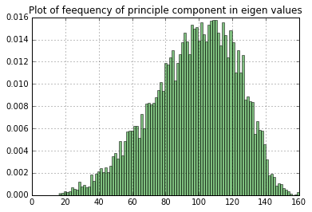
Principle Component Analysis - Model - II
In model - II , distance matrix becomes diagonal matrix and hence eigen values are diagonal elements themselves. We can plot distribution of largest difference.
wstor_II = [] for k in range(10000): x = sample_generator(Max) A = distance_matrix(x) w = max(A[0][1],A[1][2],A[2][3],A[3][4],A[4][0]) wstor_II.append(w) plt.scatter(k,w)
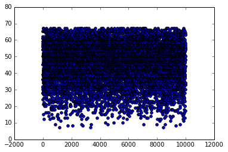
num_bins = 100 plt.grid() plt.title("Plot of feequency of principle component in eigen values") plt.hist(wstor_II,num_bins, normed= 1.0, facecolor='green', alpha = 0.5) plt.show()
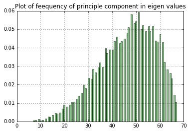
$$\color{blue}{Conclusion}$$ : Most of the distance matrices have principle component around 100. Principle compont depends on all distances. Therefore other distances can not be ignored in action. New action should be defined in term of Distance matrix.
1.1.3. Statistical Analysis & Determination of Spring Constants
1.1.3.1. Study of Variance-Covariance Matrix of samples
Study of Variance-Covariance help us to determine the spring constant(K) in our model which is ultimately related to the correlation coffecient. We construct Variance-Covariance Matirx by using 100 samples in the following steps:
- 1 . Lets construct a bag of Nbag = 1000 samples.
Nbag = 1000
SampleBag = [sample_generator(Max) for k in range(Nbag)]
- 2 . Vectorization of 100 samples : where first digit from each sample goes to first column vector of Vec matrix etc.
def vactorization(SampleBag): Vec = [[0 for k in range(Nbag)]for l in range(5)] for l in range(5): for k in range(Nbag): Vec[l][k] = SampleBag[k][l] return np.array(Vec)
SB = vactorization(SampleBag) p = 1 for l in range(5): for r in range(5): plt.subplot(5,5,p) plt.scatter(SB[l],SB[r]) p = p+1 plt.show()
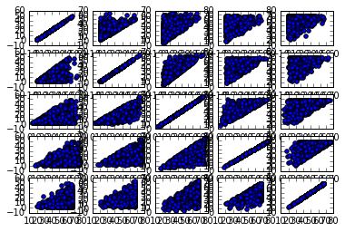
- 3 . Normalization brings each column vector to have mean equal to zero which helps to visualize variance-covariance of samples.
def normalization(Vec): mn = [0 for k in range(5)] vr = [0 for k in range(5)] rng = [0 for k in range(5)] numVec = [[0 for k in range(Nbag)]for l in range(5)] #Find mean and range (Maximum-minimum) of each vector for l in range(5): mn[l] = np.mean(Vec[l]) vr[l] = np.var(Vec[l]) for k in range(Nbag): numVec[l][k] = (SampleBag[k][l] - mn[l])/(math.sqrt(vr[l]/float(Nbag))) numVec = np.array(numVec) return numVec
1.1.3.2.a. Variance-Covariance of Raw samples
Vec = vactorization(SampleBag)
VCM_raw = np.cov(Vec)
plt.title("Variance-Covariance of raw sample") plt.imshow(VCM_raw, interpolation='nearest',\ cmap=plt.cm.hot, extent=(0.5,10.5,0.5,10.5)) plt.colorbar() plt.show()
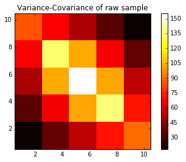
1.1.3.2.b. Variance-Covariance of Normalized samples : Crrelation cofficients
Vec = vactorization(SampleBag) numVec = normalization(Vec)
VCM_normalized = np.cov(numVec)
plt.title("Variance-Covariance of normalized sample") plt.imshow(VCM_normalized, interpolation='nearest',\ cmap=plt.cm.hot, extent=(0.5,10.5,0.5,10.5)) plt.colorbar() plt.show()
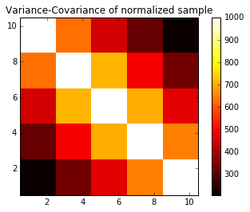
1.1.3.3. Spring Constants
Matrix of spring constants is a symmetric tensor which can be given by square root of normalized correlation cofficients.
K = np.sqrt(VCM_normalized/max(VCM_normalized[0])) K
array([[ 1. , 0.79287801, 0.66542652, 0.56166262, 0.45306335],
[ 0.79287801, 1. , 0.84281867, 0.69757696, 0.57453966],
[ 0.66542652, 0.84281867, 1. , 0.83777405, 0.68199933],
[ 0.56166262, 0.69757696, 0.83777405, 1. , 0.80502696],
[ 0.45306335, 0.57453966, 0.68199933, 0.80502696, 1. ]])
$\color{blue}{\text{Improved Action}}: \boxed{L = D^{\dagger}KD}$ with K-matrix found above.
1.2 Montecarlo Simulation
- One can calculate the most probable difference vector using Hybrid Monrtecarlo Algorithm.
Total energy of the system of (N=100) coupled oscillator in integer space can be expressed as:
$$H = \sum_{i=1}^{N} D^{\dagger}KD $$
Define some useful function for thermalization
def action(D): '''D = distance matrix''' '''K = spring constant tensor''' h = np.dot(D,np.dot(K,D)) htr = np.trace(h) return htr
def hot_start(): '''N = total no of coupled oscillators in the system ''' '''U = bag of N oscillators''' U = [] for k in range(N): x = sample_generator(Max) U.append(x) return U
def cold_start(): '''N = total no of coupled oscillators in the system ''' '''U = bag of N oscillators''' U = [] for k in range(N): x = [1,1,1,1,1] U.append(x) return U
def hamiltonian(U): '''H = total hamiltonian''' H = 0 for k in range(N): D = distance_matrix(U[k]) h = action(D) H = H+h return H
def pick_random_particle(printkey): n = random.randint(0, N-1) if printkey == 1: print "oscillator picked at",n return n
def value_shifter(u,dx): u = u + dx for k in range(len(u)): if u[k] < 0: u[k] = Max + u[k] elif u[k]>69: u[k] = u[k]%Max u = np.sort(u) return u
dv = 10 Kb = 1.0 T = 100 N = 20
1.2.1 Thermalization
def thermalize(U,T,nruns,printkey): irun = 0 h_stor = [0.0 for k in range(nrun)] U_stor = [] count = 0 while irun < nrun: h_old = hamiltonian(U) n = pick_random_particle(printkey) ov = U[n] dx = random.sample(range(-dv,dv), 5) U[n] = value_shifter(U[n],dx) h_new = hamiltonian(U) dh = h_new - h_old if printkey == 1:print "=========", irun,"==============" if dh < 0: count = count+1 if printkey == 1: print irun, "Energy decreased! It is accepted!",dh if printkey ==3: print "change made at",n,dx,"Participant",U[n] if printkey == 1: print irun, "old conf. = ", ov,"replaced by",U[n] h_stor[irun] = h_new U_stor.append(U) else: if printkey == 1:print irun, "Energy increased!",dh frac = math.exp(-dh/(Kb*T)) b = random.uniform(0.0,1.0) if printkey == 1:print "frac =",frac,"b =",b if b < frac: if printkey == 1:print irun, "You Lucky" h_stor[irun] = h_new U_stor.append(U) else: if printkey == 1:print irun, "Loser" if printkey == 1:print "config. restablished at",\ n, ":",U[n],"by",U[n]-dx,"which is old",ov U[n] = U[n] - dx h_stor[irun] = h_old if U[n][0] != ov[0] : if printkey == 1: print "Warning! config changed at",n,\ ":", ov, " replaced by", U[n] if printkey == 1:print "---------------info-closed----------------" if printkey == 1:print "" if printkey == 2: print irun, h_stor[irun] irun = irun +1 success = (count/float(nrun))*100 if printkey == 1:print "================================" print "Success=" ,success,"%" return h_stor,U_stor
Test mode
U = hot_start() #U = cold_start() nrun = 5 H_stor,U_stor = thermalize(U,T,nrun,1)
oscillator picked at 4 ================= 0 ==================== 0 Energy increased! 14490.7437085 frac = 1.16815288879e-63 b = 0.635801285104 0 Loser config. restablished at 4 : [ 4 30 51 55 57] by [ 9 25 42 48 59] which is old [ 9 25 46 50 53] ---------------info-closed---------------- oscillator picked at 4 ================= 1 ==================== 1 Energy decreased! It is accepted! -7019.6507091 1 old conf. = [ 9 25 42 48 59] replaced by [ 7 32 41 50 52] Warning! config changed at 4 : [ 9 25 42 48 59] replaced by [ 7 32 41 50 52] ---------------info-closed---------------- oscillator picked at 15 ================= 2 ==================== 2 Energy increased! 3885.6261383 frac = 1.33333750064e-17 b = 0.413681262571 2 Loser config. restablished at 15 : [30 44 56 61 62] by [38 42 52 67 65] which is old [38 42 57 62 65] ---------------info-closed---------------- oscillator picked at 12 ================= 3 ==================== 3 Energy decreased! It is accepted! -351.113417797 3 old conf. = [20 26 43 44 46] replaced by [14 19 35 35 41] Warning! config changed at 12 : [20 26 43 44 46] replaced by [14 19 35 35 41] ---------------info-closed---------------- oscillator picked at 4 ================= 4 ==================== 4 Energy decreased! It is accepted! -788.430394958 4 old conf. = [ 7 32 41 50 52] replaced by [16 27 45 50 60] Warning! config changed at 4 : [ 7 32 41 50 52] replaced by [16 27 45 50 60] ---------------info-closed---------------- =========================================== Success= 60.0 %
Thermal mode
U = hot_start() #U = cold_start() nrun = 10000 H_stor,U_stor = thermalize(U,T,nrun,0)
Success= 39.32 %
X = np.arange(0,len(H_stor),1) plt.figure(1) plt.grid() plt.plot(X,H_stor,"-") plt.show()

num_bins =50 plt.grid() plt.hist(H_stor,num_bins, normed= 1.0, facecolor='green', alpha = 0.5) plt.title("histogram of Energy") plt.show()
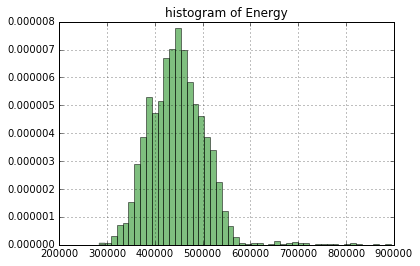
This provides sufficient evidence for system in thermal equilibrium.
Measurement of average absolute difference
def abs_diff(x): diff = abs(x[0]-x[1])+abs(x[1]-x[2])+abs(x[2]\ -x[3])+abs(x[3]-x[4])+abs(x[4]-x[0]) return diff
ln = len(U_stor) total_abs_diff = 0 Diff = [] for k in range(ln): U = U_stor[k] for l in range(N): x = U[l] diff = abs_diff(x) Diff.append(diff) total_abs_diff = total_abs_diff + diff average_abs_diff = total_abs_diff/float(ln*N)
average_abs_diff
65.200000000000003
num_bins =50 plt.grid() plt.hist(Diff,num_bins, normed= 1.0, facecolor='green', alpha = 0.5) plt.title("histogram of absolute difference") plt.show()

Measurement of root mean square absolute difference
def rms_diff(x): diff = math.sqrt(abs(x[0]-x[1])**2+abs(x[1]-x[2])**2\ +abs(x[2]-x[3])**2+abs(x[3]-x[4])**2+abs(x[4]-x[0])**2) return diff
ln = len(U_stor) total_rms_diff = 0 rms_Diff = [] for k in range(ln): U = U_stor[k] for l in range(N): x = U[l] diff = rms_diff(x) rms_Diff.append(diff) total_rms_diff = total_abs_diff + diff rms_diff = total_rms_diff/float(ln*N)
rms_diff
65.200247173536098
num_bins =50 plt.grid() plt.hist(rms_Diff,num_bins, normed= 1.0, \ facecolor='green', alpha = 0.5) plt.title("histogram of rms difference") plt.show()
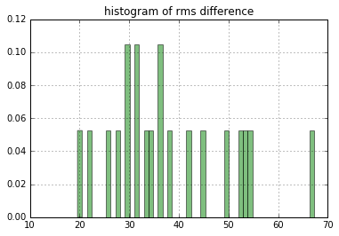
1.3. Interpretation
1.3.1. Most Probable Samples using Model -III : constrained by rms absolute difference
1.3.1.2. Generation of many samples and their actions
def simulation_III(N_sample,Max): Lstor = [] Xstor = [] k= 1 while k < N_sample: x = sample_generator(Max) D = distance_matrix(x) atn = action(D) Xstor.append(x) Lstor.append(atn) k = k+1 return Xstor,Lstor
1.3.1.3. Histogram Plot of frequencies
N_sample = 100000 Xstor,Lstor = simulation_III(N_sample,Max)
num_bins = 50 plt.grid() plt.hist(Lstor,num_bins, normed= 1.0, \ facecolor='green', alpha = 0.5) plt.show()
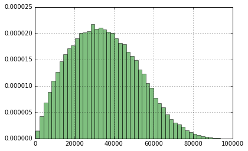
1.3.1.4. Generate some sample
sample_required = 100
count = 1 while count < sample_required: x = sample_generator(Max) rmsdiff = math.sqrt(abs(x[0]-x[1])**2+abs(x[1]-\ x[2])**2+abs(x[2]-x[3])**2+abs(x[3]-x[4])**2+abs(x[4]-x[0])**2) D = distance_matrix(x) act = action(D) if act > 20000 and act < 40000: '''rms_diff constraint''' if rmsdiff < 70 and rmsdiff > 50: count = count+1 print "rms test passed!",x,act
rms test passed! [22 31 34 36 63] 23213.3113095 rms test passed! [ 7 13 35 39 50] 33691.0412054 rms test passed! [18 46 51 61 62] 31851.0262931 rms test passed! [ 1 5 24 25 48] 35954.8593645 rms test passed! [17 37 47 52 68] 37716.8213328 rms test passed! [ 4 40 46 48 56] 39837.2864565 rms test passed! [17 33 45 46 68] 36706.1095915 rms test passed! [ 7 19 29 30 60] 39387.868137 rms test passed! [21 46 58 62 67] 34223.4073232 rms test passed! [14 23 27 39 60] 32757.3684971 rms test passed! [23 25 37 54 68] 38547.9912041 rms test passed! [ 9 35 36 38 64] 37754.3796817 rms test passed! [ 1 10 12 21 51] 36992.1945171 rms test passed! [ 7 12 20 40 52] 37750.4521181 rms test passed! [ 4 11 21 24 47] 27705.7997514 rms test passed! [27 35 38 66 68] 34682.9450353 rms test passed! [ 6 21 24 41 55] 37746.4051962 rms test passed! [ 8 17 19 20 57] 33609.5413481 rms test passed! [18 37 53 60 63] 35902.0551094 rms test passed! [12 25 30 53 57] 37347.9295182
Take these samples and buy lottery! Enjoy!
1.3.2. Most Probable Samples using Model -I : without any constraint from thermalization
1.3.2.1. Calculation of action in each sample
def action_I(x): act = 0.5*((x[0] -x[1])**2 + (x[1] -x[2])**2 + (x[2] -x[3])**2 +(x[3] -x[4])**2) return act
1.3.2.2. Generation of many (N_samples) samples and their actions
def simulation_I(N_sample,Max): Lstor = [] Xstor = [] k = 1 while k < N_sample: x = sample_generator(Max) atn = action_I(x) Xstor.append(x) Lstor.append(atn) k = k+1 return Xstor,Lstor
1.3.2.3. Histogram Plot of frequencies
N_sample = 10000 Xstor,Lstor = simulation_I(N_sample,Max)
plt.grid() plt.hist(Lstor,num_bins, normed= 1.0, facecolor='green', alpha = 0.5) plt.show()
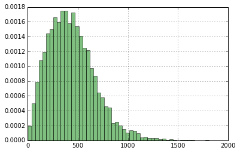
1.3.2.4. Generate some sample
sample_required = 100
k = 1 while k < sample_required: x = sample_generator(Max) act = action_I(x) if act > 250 and act < 350: print x,act k = k+1
[14 27 29 43 56] 269.0 [11 21 42 48 54] 306.5 [ 3 6 9 13 35] 259.0 [ 6 20 33 37 51] 288.5 [ 8 24 27 34 52] 319.0 [10 18 22 34 55] 332.5 [ 2 14 19 34 49] 309.5 [10 23 31 35 52] 269.0 [17 37 49 59 63] 330.0 [ 8 29 43 50 52] 345.0 [ 3 10 15 30 50] 349.5 [ 7 12 22 40 52] 296.5 [ 8 12 28 42 57] 346.5 [16 19 31 35 58] 349.0 [14 36 50 51 53] 342.5 [ 1 7 18 28 49] 349.0 [21 32 34 54 55] 263.0 [15 31 45 53 56] 262.5 [20 26 42 53 64] 267.0 [ 5 13 31 33 45] 268.0 [ 5 9 20 22 42] 270.5 [ 2 19 32 37 46] 282.0
Take these samples and buy lottery! Enjoy!